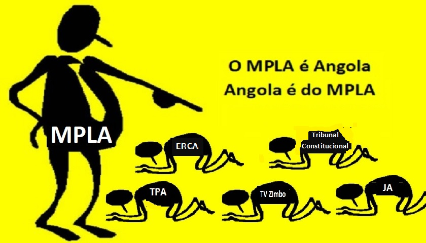

(Não ama essa merda de nação)
Nação podre do MPLA
Decidi criar uma secção apenas para escrever sobre a minha opinião e tudo que sei, e entendo sobre está País sujo, nação podre criada pelo MPLA e o seu líder Agostinho Neto (JUDAS ISCARIOTES).
A bandeira nacional deles representa muito bem isso, e deixa claro para todos nós, que o país é deles. Portanto, para de pedir justiça numa nação que não te pertence, e que só ajuda quem é do seu partido diabólico.
``Angola é um matadouro só se vive dum coro´´ - Naize Zulu
``O povo precisa da verdade´´ - MC K
``País do presidente que fode mulher do presidente´´ - Brigadeiro 10 pacotes
``Portugal também lutou contra seus demónios´´ - Scorpion
Os do MPLA são os representante de Satanás, por isso odeiam a Verdade.
Não me importo (Foda-se)
-Não me importo se as FAA, SIC, PGR, PIR,(os limpa cocô do MPLA) seja la qual for instituição, organização que pega arma de brinquedo, eu não aceito 30 ou 50 anos de prisão, porque eu sou inimigo do MPLA( e da nação podre), só aceito prisão perpetua, portanto não me dececionem quando me prenderem.
-não me importo com os conselhos porque os ímpios também não ligam pra isso, eles só querem +dinheiro, +sexo, +dinheiro, +submissão +poder político. Eles não amam a vida, matam só por matar e porque matar é a opção viável para intimidar, causar medo no povo(comigo não)
(eu não espero menos do que isso vindo da SIC, PIR, FAA).
Pensamento dos Lacaios
-vamos ameaçar a família dele assim como fizemos com o radialista da UNITA, assim a família dele vai pressionar ele a parar de despertar o povo.
-vamos tortura-lo, até ele decidir parar de ser racional e sensato.
-temos que tentar parar ele, porque se não, nós vamos perder o emprego que o MPLA nos deu.
-vamos oferecer a ele 100 milhões de kz, em troca de ele apagar os vídeos e deixar de criticar a nação podre que amamos.
-vamos matar um dos seus amigos para que ele acredite que estamos a falar sério.
-O MPLA não gosta dele, temos que matar ele rápido; podemos envenenar ou expulsar ele do país.
-vamos fazer ele pensar que está maluco e errado na sua tese.
-precisamos fazer com que ele pare de saber a verdade, pare de raciocinar, pensar, refletir, e de falar política.
Os filhos de Satanás no dia da revolução vão pensar desse jeito
-São selvagens e animais, que ainda mentalmente vivem na selva matando para sobreviver, são lobos mascarados de ovelhas, esfomeados(FAA, SIC, PGR, PN, PIR, MPLA).
-vamos matar-nos (MPLA VS SCP), porque eu não quero que o MPLA continue, não permitirei, não haverá paz entre eu e o MPLA(também não quero paz com o partido de satanás).
-Sou 100% a favor da 3º guerra civil em Angola(a causa é justa), essa terra não é da mãe do João Lorenço, nem do MPLA(partido dos Joios).
Salmos 91:7
7 Mil cairão ao teu lado, e dez mil à tua direita; mas tu não serás atingido.
8 Apenas estarás olhando com os teus olhos. E estarás vendo a própria retribuição feita aos iníquos.
-Não me importo se o ETERNO vai ou não agir a favor de mim, agirei porque eu acredito(aceito a verdade) que ele escreve perfeito por linhas tortas, até a minha morte vai contribuir para o bem daqueles que lhe amam.
Romanos 8:28
Sabemos que O ETERNO age em todas as coisas para o bem daqueles que o amam, dos que foram chamados de acordo com o seu propósito.
-Não me importo se o ETERNO me revela-se que esse povo nunca vai mudar, e que Angola nunca vai prosperar, ou esse povo nunca será abençoado, e que vamos continuar na pobreza, miséria, lixo, até Jesus voltar.
Pra mim seria melhor, o que eu mais quero é a verdade, independente do que ela pode revelar se for algo bom ou mau.
A nação podre criada pelo Agostinho Neto(Judas Iscariotes)
Foi fundada por um partido de guerrilha, que não sabem fazer política(até hoje muitos não sabem), e estavam desesperado e ansiosos por poder político.
As eleições se aproximavam(entre Agosto e Outubro) e, Agostinho Neto sabendo que não iria se relacionar bem no governo com os outros partidos, decidiu pedir ajuda aos inimigos do povo(demónios de Portugal, que cá estavam ainda no governo de transição), para o ajudarem com armamento pesado de guerra na luta contra seus irmão da FNLA E UNITA(que ambas sofreram muito nessa luta contra os demónios de Portugal de 1960-1974).
Ele primeiro criou um plano para alcançar o poder, e tomar pela violência e força das armas. Ele até chamou os irmãos dele que estavam na guerra de lacaios(servos, carrasco, criado)
escute bem o áudio (obrigatório).
clica aqui para escutar o áudio no youtube
Agora raciocina comigo, é certo chamar Agostinho Neto de herói ? herói de quem ?, um médico e doutorado a matar mais do que salvar vidas! Fazendo guerra entre irmãos! Torturando seus companheiros de longa data! Não seja lacaio.

(os lacaios, os limpa cocô do MPLA, fracos, covardes, submissos, ignorantes)
Lacaio
Um lacaio, nesse sentido, é alguém que não está protegido pelos direitos.
Atualmente, o termo é associado a um sujeito vil( de pouco valor; insignificante) e indigno, capaz de se rebaixar/humilhar para estar perto de alguém poderoso. O secretário de um governador, por exemplo, pode ser considerado um lacaio se estiver disposto a mentir para a sociedade só para agradar ao seu chefe. O lacaio, neste sentido, deixa de lado o bem comum só para servir o poderoso, com a esperança de conquistar a sua simpatia.
(nação dos lacaios)
Por causa dele o país foi adiado, e nunca teve paz, justiça, prosperidade, e abundancia para o povo todo(mas sim para o partido deles).
No meio dos 3 partidos ele traiu em troca de poder, assim como Judas Iscariotes, no meio dos 12 traiu os apostolos em troca de moedas(que também é poder).
Assim como Judas Iscariotes fez aliança com os inimigos dos 12 apóstolos, assim Agostinho Neto fez aliança com os inimigos dos 3 partidos
Mt 26:1-5
22 Aproximava-se já a celebração da Páscoa, a festa judaica durante a qual só se comia pão feito sem fermento.
2 Os principais sacerdotes e especialistas na Lei tramavam ativamente o assassínio de Jesus, pensando na maneira de o matar sem provocar tumulto, perigo que muito receavam.
3 Então Satanás entrou em Judas, o chamado Iscariotes, um dos doze discípulos,
4 o qual foi ter com os principais sacerdotes e com os capitães da guarda do templo, a fim de combinar a melhor maneira de lhes entregar Jesus.
5 Eles ficaram muito satisfeitos ao saberem que Judas estava pronto a auxiliá-los e prometeram-lhe uma recompensa.
6 Assim, começou a aguardar qualquer oportunidade para lhes entregar Jesus sem dar nas vistas.
Você acha que O ETERNO fez estátua lá no céu para glorificar Judas Iscariotes ?, que traiu os outros por moedas ?, ou você acha que O ETERNO é brincalhão ?, onde está o Agostinho Neto agora que traiu seus irmãos ?, valeu apena ? por acaso o que ele fez ajudou o povo ou o partido dele MPLA ?, entre o povo e o MPLA quem se beneficiou com a guerra?, nesta nação o poder emana do povo ou do MPLA ?
coragem homem!
Isaías 32:17
O fruto da justiça será paz;
o resultado da justiça será tranquilidade
e confiança para sempre.
-Agostinho Neto atraiu a guerra ou a paz? , Bênção ou Maldição ?, riqueza ou pobreza?, união ou desunião ?
Ele teve muito sucesso com os planos diabólico, mas eu acredito que isso tem uma explicação espiritual do porque ele fez isso, e porque que Angola tinha que seguir esse caminho que já dura há 49 anos.
João 10:10
O ladrão não vem a não ser para roubar, e matar, e destruir.
1 + 1 =
tá duro ?
(Rosa Coutinho, o homem que Judas recorreu para conquistar o poder)
Agora que ficou bem esclarecido, o que você vai fazer ?, apoiar está nação podre do MPLA ?, limpar cocô do Agostinho Neto ?.
Porque que Angola foi por esse caminho?
Conforme eu tinha dito, o ETERNO escreve perfeito por linhas tortas(nada é por acaso), e o motivo tem haver com a vontade dele, de querer usar Angola(acredito eu) com algum propósito especifico, que está relacionado com bênção, prosperidade, abundancia, paz, e tudo de bom que emana do ETERNO.
Talvez posso estar equivocado, mas eu não me importo, desde que eu consiga ver a felicidade, alegria do povo que está farto e cansado de tanta opressão interna desde 1975-2024;
Isso tudo faz o povo se questionar do porque tudo isso de mau acontecendo aqui ? se não é o que desejamos para nós angolanos.
Conclusão
A terra angolana é rica e abençoada em tudo, desde o mar até o interior do país(não justifica pobreza), porém essas riquezas caiu nas mãos de pessoas ímpias, egoístas, gananciosas(que não amam o CRIADOR), por isso o povo nunca chegou a desfrutar das verdadeiras bênçãos da sua terra.
Portanto se o povo quiser desfrutar dessa terra e de todas as bênçãos, abundancia que ela traz, devemos colocar as pessoas CERTAS no lugar CERTO, e de maior destaque, enaltecer os bons, competentes, diligentes, inteligentes, sensatos, justos, honestos, e verdadeiros, para que Angola comece a andar no caminho certo com o CRIADOR.
Provérbios 10:6
6 Sobre a cabeça dos justos há bênçãos.
Entretanto, devemos abandonar está nação porque ela faz parte da velha personalidade, e tem como fundador um homem que, segundo a vontade do ETERNO procedeu do jeito errado.
Naize Zulu(em Defesa)
O que não se compreende na nossa sociedade, é que o policia armado que prime o gatilho, contra uma zungueira, é filho de uma zungueira, o policia armado que prime o gatilho, contra um marginal, é irmão de um marginal, e ele também já foi marginal.
O que não se compreende na nossa sociedade, é que doutores jurarão pra dizer que defenderiam o povo, hoje se não tiver dinheiro, te deixam morrer no banco de urgência, essa é tua Angola, assim que você ta olhar pra tua terra, dinheiro acima de tudo, teu pai padece, teu irmão padece, Angola padece.
Sigma(Acaminho das Eleições)
Quando um intelectual troca sua dignidade por um prato de arroz e peixe frito, é este nível que eu coloco estas pessoas, então este pais não tem futuro.